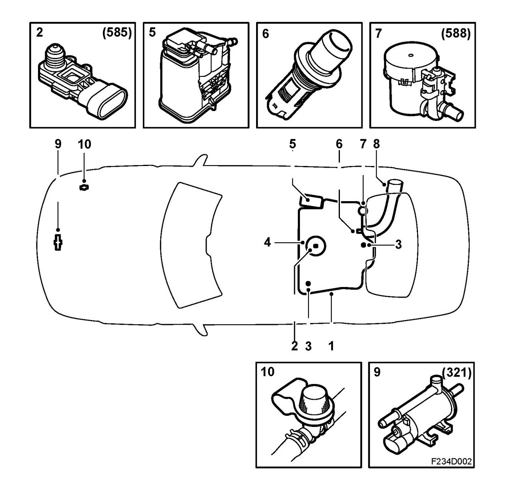

Component Locations
Main Components

1. Fuel tank
2. EVAP pressure sensor (585)
3. Roll-over shut-off valve
4. Float valve
5. Evaporative emission canister
6. Check valve, fuel tank
7. EVAP shut-off solenoid valve (588)
8. Fuel filler pipe
9. EVAP canister purge valve (321)
10. Service port